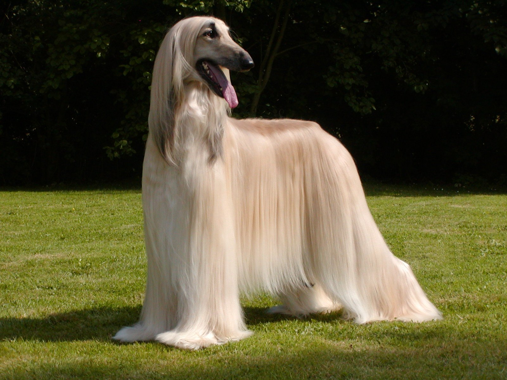
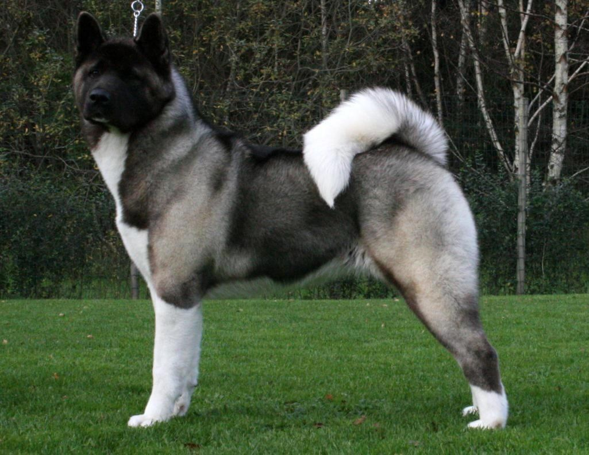
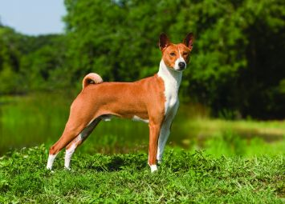
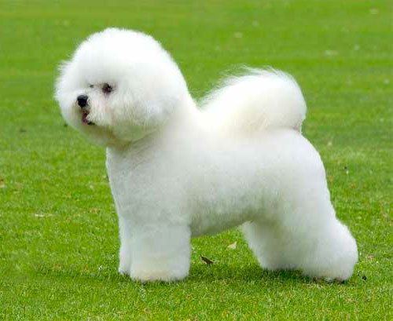
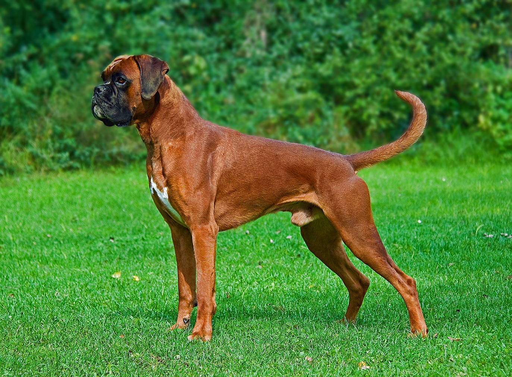
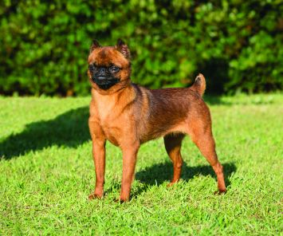
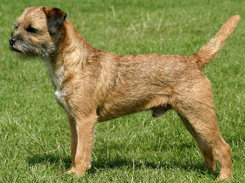
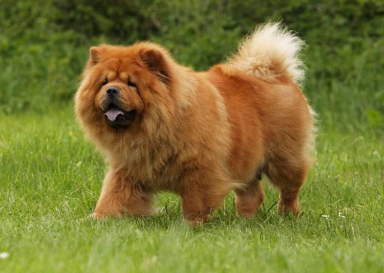
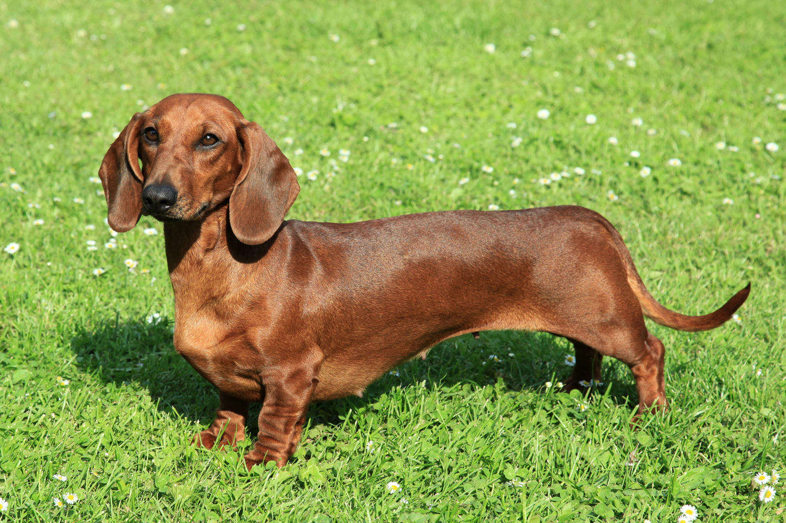

He has a straight front, proudly carried head,long silky topknot, peculiar coat pattern,
very prominent hipbones and large feet. The neck is long and strong.
The Afghan Hound is a lively and active creature with a very individual personality. You will find that some Afghan Hounds can be quite
boisterous whereas others tend to be more reserved. These dogs are usually determined and quite independent -
however, this is not a breed that likes to be left alone for long periods, and if neglected can become bored and destructive.
They must be trained kindly yet in a calm and firm manner. The Afghan has been described as "a king of dogs."
Majestic, elegant, noble and courageous, suspicious of, but not hostile to, strangers.Some Afghans have a tendency to become withdrawn without proper socialization, and therefore you should ensure that he is socialized at an early age.
TRAINING, EXERCISE AND HEALTH ISSUES:
The Afghan Hound is best suited to those with some experience of dog ownership and training, as their stubborn streak can make training quite a challenge.
It needs a minimum of 30 minutes of free galloping per day. The Afghan Hound is not recommended for apartment life.
The lifespan of the Afghan Hound is around twelve years. the Afghan has a low pain tolerance, thereby suffering even with minor injuries.
Other health problems to look out for with the Afghan Hound include thyroid problems, OCD, and autoimmune problems.
This breed can also be very sensitive to chemicals and medications.
The Akita

PHYSICAL APPEARANCE AND TEMPERAMENT:
Akitas are large and powerful.The Akita is slightly longer than he is tall with a broad, deep chest and level back.
The broad head, small eyes and erect ears carried forward in line with back of neck, is characteristic of the breed. The tail is curled over the back.
The Akita has cat-like feet - which makes it a fine swimmer.
The double coat is composed of a harsh, waterproof outer coat insulated with a thick, soft undercoat.The Akita is docile, intelligent, courageous and fearless. Careful and very affectionate with its family. Sometimes spontaneous, it needs a firm, confident, consistent leader as its owner.
Without it the dog will be very willful and may become very aggressive to other dogs and animals.
TRAINING, EXERCISE AND HEALTH ISSUES:
This is an independent and often strong willed breed, and this can make training difficult.The coarse, stiff, short-haired coat needs significant grooming.
You will need to groom the Akita once a week, and in order to keep his coat in good condition.
This breed sheds heavily twice a year, and therefore grooming may need to be stepped up during this period.The life expectancy of the Akita is around 10-13 years. There are a number of health problems to look out for with this breed,
and this includes thyroid problems, lupus, cancer, skin conditions, and autoimmune problems.A well exercised and fit Akita is calm and docile in the house and will typically not engage in any kind of destructive behavior, but they do need regular, lengthy exercise periods per day if kept indoors.
The Basenji

PHYSICAL APPEARANCE AND TEMPERAMENT:
The Basenji is small in size, and has an eager, alert, and intelligent expression. The Basenji breed's striking characteristics are a slim body and long legs, made even more prominent by a coat of short hair. The back is leveled; the legs are long, and the forehead is furrowed with wrinkles, giving it a worried look.
The ears are straight and open, facing front and its tail is set high and curls up over the back.
Its eyes are small and almond shaped. The Basenji is alert, affectionate, energetic and curious. It loves to play and makes a good pet, as long as it is handled regularly from an early age.
It is very intelligent, responds well to training with a strong desire to please. The Basenji can have a dominant streak too, and can be manipulative sometimes, and is therefore best suited to more experienced dog owners. Basenjis, unlike many other dogs require very little grooming other than the normal brushing. He will love being brushed,
as they are always craving attention from their owner.They wash and clean themselves like cats, always licking themselves clean. The Basenji does not smell so they require little bathing as well.
This breed sheds little to no hair. They are the ideal dog for someone with allergies.
TRAINING, EXERCISE AND HEALTH ISSUES:
This breed is prone to Fanconi's syndrome (kidney problems), which must be treated the moment the symptoms are noticed. Also, they are susceptible to progressive retinal atrophy, intestinal, and eye problems.
The life expectancy of the Basenji is around 13 yearsBasenji dogs need as much exercise as you can possibly give them. They are highly energetic dogs that need more than just occasional walks.
If they don't get the exercise they need, they will exert it in negative ways such as chewing and destroying whatever they find.
The Bichon Frise

PHYSICAL APPEARANCE AND TEMPERAMENT:The Bichon Frise is a breed that is sweet tempered, merry, and eager, always wanting to please his owners and family. These dogs are very entertaining and make for great companions, and have a very gentle nature and are sensitive and affectionate.
They are very adaptable, and will be happy in various living environments.
TRAINING, EXERCISE AND HEALTH ISSUES:
The Bichon Frise requires frequent grooming. They are known as a high maintenance breed. Daily brushing is a must, as their coat tends to mat very easily.
Professional grooming every four weeks is recommended to keep them looking their very best.The Bichon Frise has a life expectancy of around 14 years. A number of health problems and disorders are associated with this breed, and this includes epilepsy, cataracts, bleeding disorders, allergies, and bladder stones. They are prone to skin problems, allergies, ear infections, and deafness.
Dental hygiene is extremely important to prevent tooth loss. They are sensitive to fleabites. They enjoy daily walks and play sessions. They are well suited to apartment living provided appropriate exercise is given.
The Boxer

PHYSICAL APPEARANCE AND TEMPERAMENT:
The Boxer is a dog that has a square build and strong, athletic limbs.He has erect ears when cropped, which add to his alert expression.The Boxer weighs in at around 50-85 pounds, and the height of the Boxer is around 21-26 inches. The Boxer has distinctive drooping jowls. The Boxer has a shorthaired coat, which is shiny, smooth, and fits tightly to the body. The coat comes in such colors as fawn, red, and brown, with "flashings" of white on their belly, chest, and all four feet.
Boxers are lively, strong, and extremely loyal. They have an exceedingly high energy level. They exhibit curiosity, but are wary of strangers. This breed is fearless and courageous if threatened. They are keenly alert and have a heightened sense of hearing, which make them excellent guard dogs. The Boxer adores children and other pets they have been raised with.
They crave for human companionship and do not like to be alone for extended periods of time.Insufficient attention may lead them into destructive behavior in an attempt to be noticed.
TRAINING, EXERCISE AND HEALTH ISSUES:
Taking care of their coat is a very simple affair. They are very clean dogs and often will actually keep themselves preened like a cat. From age eight on Boxers are more likely to get tumors than other breeds. They also have a tendency for allergies. These dogs may drool and snore and may have excessive flatulence. Some white Boxers are prone to deafness. The Boxer has a life expectancy of around 8-12 years.
Some major health concerns for boxers are cardiomyopathy and other heart problems, and thyroid. They can be prone to skin allergies and are sometimes prone to epilepsy and hip dysplasia.
Boxers are large dogs that can certainly benefit from at least an hour of good exercise every day. Joggers will find them perfect workout companions.
SET 2
The Brussels Griffon

PHYSICAL APPEARANCE AND TEMPERAMENT:
The Griffon is a sturdy toy dog of square proportions with a domed head, undershot jaw, very short nose and lustrous eyes. The head is large in comparison to the body.
To some viewers he resembles a miniature Boxer. There are two distinct types of coat: rough or smooth.Shedding very little, this breed does need a lot of maintenance on the coat.
The Griffon comes in either a rough coat or smooth coat, each requiring its own amount of upkeep.
The rough coat is one that sheds less than the smooth coat.The rough coat is one that sheds less than the smooth coat but a rough coat also requires hand stripping.
Clipping is sorely advised against when it comes to a rough coat.
TRAINING, EXERCISE AND HEALTH ISSUES:
The life expectancy of the Brussels Griffon is around 12-15 years. There are a number of illnesses and health problems that are associated with the breed, and this includes luxating patella,
Legg Perthes, seizures, heart problems, and cataracts.A lively and hyperactive breed, they still do not require much activity. The Brussels Griffon gets most of his exercise in the home.
This dog does enjoy short walks and will do just fine without a yard.
The Border Terrrier

PHYSICAL APPEARANCE AND TEMPERAMENT:
The Border is medium-sized with a wiry coat. While the coat can sometimes be long and a bit shabby, there are other dogs whose wiry coat is fairly smooth. On the face, the hair is tame with a bushy snout, giving the appearance of dense whiskers.
He has dark lively eyes, a short snout, black nose and small ears. The tail is relatively short and tapers from a thicker base to the tip.Friendly and playful, the Border Terrier is very affectionate and thrives on human interaction and attention.
They do best in a home with older considerate children. They will generally get along with other dogs but are not recommended for homes with cats or other small household pets. The Border Terrier does not do well if left alone for extended periods of time and will become destructive and bark excessively if bored or lonely.
This breed is usually fine with strangers and his tendency to bark makes him an effective watchdog.
TRAINING, EXERCISE AND HEALTH ISSUES:
This is a responsive breed when it comes to training, and those with the experience and know how can use the right attitude to get the best out of this little dog.
The Border Terrier must be brushed weekly and have the coat professionally stripped twice a year. This is a low shedding dog, and therefore may be suitable for people with allergies providing he is groomed regularly.
The Border Terrier is relatively insensitive to pain and shows few signs of illness, so the owner should watch this breed's health carefully. Border Terriers are prone to hip dysplasia, cataracts, seizures, heart defects, allergies, and a low tolerance for anesthesia. It is important to not over-feed this breed as they have a tendency to gain weight easily.
The life expectancy of the Border Terrier is around 12-15 years, sometimes longer.Border Terriers were bred to hunt and have great vitality and stamina. They need plenty of exercise, which includes a long daily walk. The Border Terrier needs regular, daily exercise and enjoys being given a job to do.
This breed will do okay in an apartment dwelling provided they receive sufficient physical exercise and mental stimulation.
The Chow-Chow

PHYSICAL APPEARANCE AND TEMPERAMENT:
The Chow-Chow are mostly recognized for their rough coat that makes them resemble miniature bears or lions. This lion-like breed comes in five colors - red, black, blue, cinnamon and cream - and is known for its blue/black tongue.
The ears are small and rounded and there is a huge ruff behind the head, which gives it a lion like appearance. Its head is broad and its skull is flat. The muzzle is broad near the eyes and narrows toward a black nose without becoming pointed.
The tail is thickly covered with hair and is carried over its back.The temperament of the Chow is one that seems to be full of inconsistencies. While they can at times be quite aloof, they are also a great family pet who loves children.
These dogs are alert and intelligent, and it can be difficult to get some Chow Chows to do anything that they do not want to do, which makes them more suited to those with more experience with dog ownership and training. This breed does have territorial instincts,
and needs to be socialized early on in order to ensure that he has an even temperament and stable personality.The
TRAINING, EXERCISE AND HEALTH ISSUES:
The life expectancy of the Chow Chow is around 8-12 years, and there are a number of health problems associated with this breed. Beware of hip dysplasia. They are prone to suffer eye irritation called entropion, caused by eyelid abnormality; this can be corrected with surgery.
Other than that they are generally healthy. The Chow Chow has a tendency to be lazy. They prefer to stay indoors where they are relatively inactive.
They benefit from short daily walks. The Chow is well suited for apartment dwelling provided they are given sufficient exercise. Chow Chow requires intense, extensive, and ongoing training in both socialization and obedience.
With the rough coated Chow Chow you will need to brush the coat twice weekly, and more often during heavier shedding. You will also need to brush the smooth coated variety regularly. You may need to have these dogs professionally groomed occasionally.
The Dachsund

PHYSICAL APPEARANCE AND TEMPERAMENT:
The Dachshund is also known as a 'sausage dog' and has a very low body that is close to the ground, and is elongated. The Dachshund has a muscular and sturdy build, and his expression is a sweet and eager one. There are three varieties of Dachshund, and this includes the longhaired, the smooth haired, and the wirehaired variety. The miniature Dachshund weighs in at 7 to 11 pounds,
and standard Dachshunds are around 20-28 pounds. The height of the Dachshund is 5 inches for miniatures and around 8-10 inches
Dachshunds are a very clownish breed and can be very mischievous at times. A very intuitive dog, the Dachshund is now most commonly seen as a companion rather than a hunter. This breed loves to be around people. Dachshunds are very clever dogs.
TheThe Long Haired variety requires quite a bit of grooming. Being that this dog is so low to the ground, he is prone to getting burrs, sticks, and twigs stuck in his coat which should be removed daily if any are present. Brushing of the coat should be done on a regular basis to prevent tangling and/or matting.
Dachshund is a fun loving dog, tenacious, and lively, but can become jealous and be very irritable. This breed does not do well with smaller children, but can do very well with older and more considerate children. Due to his small size and tiny legs, this breed should not be placed in a home with larger dogs unless they were raised around each other.
TRAINING, EXERCISE AND HEALTH ISSUES:
Dachshunds are prone to spinal disc problems, also known as Dachshund paralysis. This is due to their very long spinal columns and very short rib cages. Dogs with this problem can become completely paralyzed. For this reason, it's important that your dog be trained early on not to jump, as jumping puts additional pressure on the spine. They are also prone to Heart disease, urinary tract problems and diabetes.
This dog can become inactive as they age, which makes them prone to obesity. The life expectancy of the Dachshund is around 12-15 years. A short walk per day would suffice for this short-bodied breed. The Dachshund tends to tire out easily so any exercise provided should be given at different times rather than one long walk.
The Doberman Pinscher
PHYSICAL APPEARANCE AND TEMPERAMENT:
The Doberman Pinscher is an elegant, muscular and very powerful dog. It has a well proportioned chest, a short back and a lean, muscular neck. Its hard, short-haired, close-fitting coat comes in black, black & tan, blue-gray, red, fawn and white.
Its teeth are strong and close in a scissors bite. Eyes are dark with a lively, intelligent expression. The ears are usually cropped (cut at the age of about 12 weeks). The pup's ears have to be taped for a couple of months to make them stand up.
Proud, noble, and alert, the Doberman Pinscher is a dog with plenty of devotion and love to give. These dutiful dogs tend to have an even, well balanced temperament, and are intelligent, creative, and quick to learn. The Doberman Pinscher excels in obedience training when it is positive and includes treats and lots of praise. They are one of the most intelligent and fastest learning of all breeds. These dogs are best suited to those who can establish themselves as "boss" from day one, as this breed can be strong willed and stubborn.
.The Doberman Pinscher can be reserved with strangers so plenty of socialization from a young age is important. He is fearless, powerful and protective of his loved ones. He will fight if provoked, and he definitely wont back down (unless trained to), making him an effective guard dog.
TRAINING, EXERCISE AND HEALTH ISSUES:
Doberman Pinschers require minimal grooming. Occasional brushing or wiping of the coat with a damp cloth will minimize loose hair. Dental hygiene is crucial to prevent early tooth loss. It is also important to keep their nails trimmed short.
The life expectancy of the Doberman Pinscher is around 8-12 years, and there are a number of health problems and disorder linked to the breed. The Doberman Pinscher is prone to bloat, hip dysplasia, and congenital heart disorders. They do not do well in cold climates.
Highly energetic, Doberman Pinschers require daily extensive exercise and mental stimulation to prevent behavioural issues.